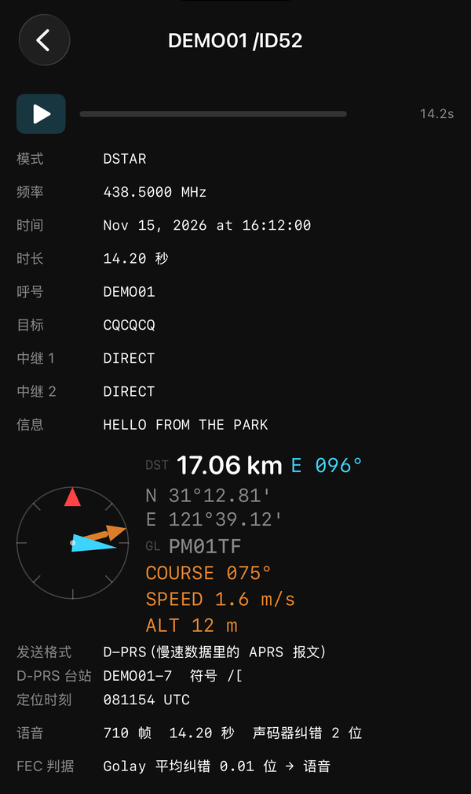
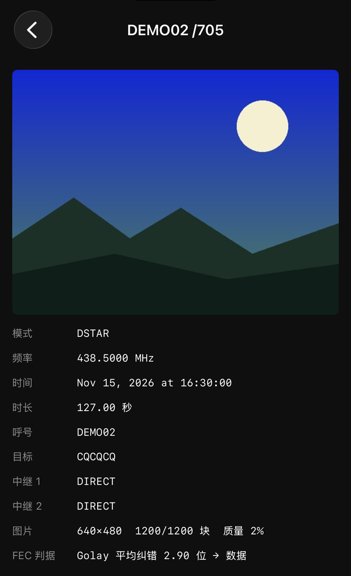

D-STAR 数字语音
D-STAR 是业余无线电里常见的数字语音制式。SDRViewer 在 Receiver 页面里接收它：能听到语音，看到对方的呼号、留言和位置，还能收对方发来的图片。收到的每一次通联都会存下来。
怎么开始收
- 调到 D-STAR 的频率在 Receiver 页面输入频率，比如本地的 D-STAR 直频或中继的下行频率。
- 解调方式选 DV点左边蓝色的方式名，选 DV。选 NFM 也可以：App 会自动认出 D-STAR 信号，区别只是 NFM 下没人发射时你听到的是普通的调频声音。
- 点播放，等人发射有人发射时，页面下方会弹出一张卡片，扬声器里播放解码后的语音。
频率要准。D-STAR 的信道只有 6.25 kHz 宽，接收机的频率偏一点就完全解不出来。使用前先完成频率校准。另外手持机离接收机太近（几米之内）信号会过强，反而解不出来，拉开距离再试。
收语音时弹出的卡片


第一行：对方的呼号和后缀（通常是机型，如 ID52）。左边的绿点表示正在接收，右上角的 RX 同理。
→ CQCQCQ：对方呼叫的对象，CQCQCQ 表示呼叫所有人。
via … → …：经过的中继。DIRECT → DIRECT 表示没有经过中继，是直接通联。
留言：对方电台里预设的一句话，最多 20 个字符。
位置（对方开了 GPS 才有）：DST 是到你的距离和方位；下面是对方的经纬度和网格（GL）；COURSE / SPEED / ALT 是对方自己的航向、速度和高度。右边的罗盘上，红色三角指北，蓝色指针指向对方所在的方向，橙色箭头是对方自己的行进方向。
距离和方位是按你的位置算的。在设置的“我的位置”里填上坐标或网格，或者打开“跟随我的位置”。没填的话卡片只显示对方的坐标，不显示距离，因为瞎猜一个位置算出来的距离是错的。
收图片时
ICOM 的 ID-52、IC-705 等电台可以通过 D-STAR 发送照片。对方发图时，卡片里会出现图片区域，并且一块一块地填充：已经收到的部分显示出来，还没到的部分是空的，红色小方块标出最新到达的那一块。


- 一张 640×480 的照片分成 1200 块，用快速数据方式发送大约需要两分钟；小尺寸的 160×120 是 80 块。
- 发图期间对方通常不说话，所以没有语音，这是正常的。
- 信号不好丢了几块时，图片仍然会显示，只是丢的那几块用相邻的内容填补。
- 发射结束后，完整的图片保存进 RX History。
RX History：收到过的通联
点 Receiver 页面右上角的时钟图标打开。每一次收到的 D-STAR 发射是一条记录，最新的在最上面。

| 列表上的标记 | 含义 |
|---|---|
| 左边的缩略图 | 有图片的记录显示图片缩略图，其它显示声波图标。 |
| 喇叭图标和秒数 | 这条记录有语音，以及语音的长度。 |
| 图片图标和尺寸 | 这条记录有图片，后面写着尺寸和是否收完整。 |
| 塔形图标、距离和方位 | 对方发了位置，这是它离你的距离和方向。 |
| 对话图标和文字 | 对方的留言。 |
点一条记录看详情；向左滑可以删除单条；右上角的垃圾桶清空全部。
播放语音

记录顶部是播放按钮和进度条，点一下回放当时收到的语音。下面依次是模式、频率、时间、时长、呼号、目标、中继和留言。对方发了位置时，会显示和实时卡片一样的罗盘、距离、坐标、航向和速度，以及位置是通过哪种格式发来的。
最下面两行是给想了解信号质量的人看的：语音一行是语音帧数和纠正的错误位数，越少说明信号越干净；FEC 判据是 App 判断这次发射是语音还是数据的依据。
查看图片

带图片的记录在顶部显示收到的照片。图片一行写着尺寸、收到的块数（如 1200/1200 表示完整）和对方设定的画质。
常见情况
| 现象 | 原因和办法 |
|---|---|
| 瀑布图上有信号，但没有卡片也没有声音 | 频率偏了，先做频率校准；或者信号太强，离发射机远一点；也可能那不是 D-STAR 信号。 |
| 卡片上只有呼号一栏是空的 | 你是在对方发射中途才开始收的。呼号只在每次发射的开头发一次，但语音、留言和位置仍然能解出来。 |
| 有卡片但没有声音 | 对方在发图片或数据，没有语音；或者手机静音了。 |
| 语音有点“机器人”腔 | 数字语音编码本身的特点，再加上 App 用的是开源解码器，音质会比原厂电台略差。 |
| 没有显示距离和方位 | 对方没有发位置，或者你没有填自己的位置。 |
| RX History 是空的 | 记录只在一次发射结束后才保存；纯噪声触发的“假接收”会被自动丢弃。 |